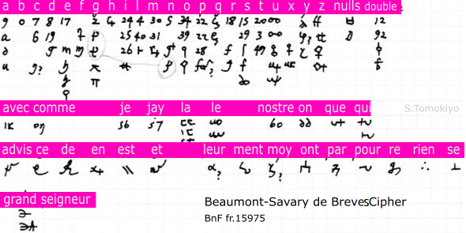
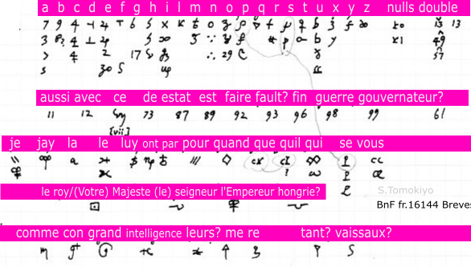
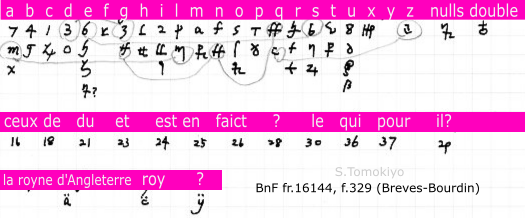

French ciphers during the reign of Henry IV (1589-1610) are described. (This article began in 2015 as a small collection of ciphers of the period found in publications. A substantial enlargement was made in 2019 based on materials in archives available online.)
Observations on Ciphers in the Reign of Henry IV
Ciphers of Ambassador in Venice (de Maisse, Seguier)
Ciphers of Ambassadors in England and Scotland (La Fontaine, Boissise, Maupas du Tour, La Fontaine 2, Beaumont, DuJardin, Boderie)
Maximilien de Béthune, Duke of Sully
Ambassador in Constantinople (Savary de Breves, Salignac, Lisle)
Ciphers Used by Beaumont with Other Ambassadors (1602) (Beaumont-Fresne, Beaumont-Savary, Beaumont-Bethune, Beaumont-Maupas du Tour, Beaumont-Boderie, Beaumont-Buzanval)
Cipher between Henry IV and Maurice of Hesse-Cassel (1603-1610)
A Cipher of Henry IV's Informant (1601)
• Some ciphers in the reign of Henry IV use predominantly Arabic figures. (While most ciphers in the previous reigns mainly used arbitrary symbols, at least the cipher of Paul de Foix, ambassador in Rome in 1579-1584, used Arabic figures (see another article).) • Many ciphers employ a symbol to repeat the previous symbol. (In the previous reign, Boderie's cipehr (1585) and Savary's cipher (1588) also used a symbol to this effect.) • Some ciphers employ a symbol to delete the previous symbol (see the ciphers of Harlay, Comte de Beaumont, La Boderie, Béthune below). • The nomenclature (code portion) of the ciphers used by Maisse, ambassador in Venice, up to 1596 employed arbitrary symbols, while the ciphers used by ambassadors in England in 1595-1611 used Arabic figures to represent names and words. It is yet to be found out whether the former developed into the latter or these are regional (or merely ad hoc) differences. • The nomenclature with two-digit figures with diacritics is a feature common with ciphers early in the reign of Louis XIV (see another article). The same feature is seen in Spanish cipher Cg.13 (1587) (see another article). Although the deciphering of Cg.13 is found in the French archives (see another article), further search is needed to see whether there was a Spanish influence. • In 1593, Jerome Gondy in Italy and the Duke of Nevers used an extensive symbol cipher (no.60 of the Nevers Collection) in their correspondence with the King or Revol, his secretary state, while they used a numerical cipher (no.46 of the Nevers Collection) with Vivonne. • The Beaumont-Fresne Cipher (1602) appears to provide for symbols (not Arabic figures!) representing every syllable ("ba", "be", "bi", ....) • La Fontaine, ambassador in England, used the same cipher in 1595 and 1603. • Maisse, ambassador in Venice, used five ciphers in 1592-1596 in his correspondence with the King or Villeroy, his secretary of state. Some overlap in period of use. • Maisse, ambassador in Venice, and Savary de Breves, ambassador in Constantinople, used the same cipher in 1593-1594 in their correspondence with the court. It was also used by Camillo de la Croce in 1594. Later, in 1602-1603, Savary de Breves reused the cipher in his correspondence with Beaumont, ambassador in England. • In 1602, Fresne, ambassador in Venice, sent his cipher (presumably not the one he used with the court) to Savary de Breves, ambassador in Constantinople. • In 1602, Harlay (Beaumont), ambassador in London, used different ciphers (different from the one he used with the court) with different ambassadors. • Henry IV's letter to Cardinal Joyeuse dated 17 September 1598 informed that he had commanded that a cipher be sent him, which he was to use as needed (Lettres missives, vol.5, p.29). The manuscripts of the printed letters (p.104, 105) to Joyeuse will allow reconstruction of the cipher. • Henry IV's letter to Fresne-Canaye dated 22 July 1603 informed that a new cipher was sent and the king would use it when he knew it was received (Letters missives, vol.6, p.142). • Lisle, agent in Constantinople, used the same cipher in 1606 and 1607, but the specimen from 1607 uses two-digit figures not used in 1606. It is wondered whether the figure symbols were added, or Lisle simply did not use figures in 1606.Observations on Ciphers in the Reign of Henry IV
Symbols
Change/Sharing of Ciphers
(See also "A Cipher of Henry of Navarre before Accession to the French Throne (1587)".)
The correspondence between Henry IV and the Duke of Nevers in April to September 1591 uses the cipher no.36 of the Nevers Collection (dated January 1591). This is a symbol cipher with a small nomenclature. It is in the same style as ciphers of Henry II and Henry III.
This year, the King was active in the field. He took Chartres in April (Baird ii, p.271, 272) and began a siege on Rouen in November (Baird ii, p.284) (to be abandoned next spring when the Duke of Parma arrived from Flanders (Baird ii, p.289)). The King continued to keep Paris in a state of partial siege (Baird ii, p.322, 232, 280) after the relief of the capital by the Duke of Parma in August 1590.
André Hurault, sieur de Maisse (mentioned in Wikipedia) was ambassador in Venice from 1582 to 1596, except for a brief period in 1588-1589. When he was sent to Venice in 1589, now representing Henry IV, Venice not only accepted him despite intervention of the Spanish ambassador and the papal nuncio, but also became the first Catholic state to send an ambassador to the Protestant French king. Henry IV also sent, as early as August 1590, de Maisse to the Grand Duke of Tuscany, who helped Henry IV's cause during this critical period.(Jensen p.34-36, d'Ars p.318)
BnF fr.16093 (Gallica, originally Harlay Ms. 1024) contains many letters from Henry IV to de Maisse, ambassador in Venice, in 1592-1596. Several ciphers were used in this period. (See another article for his ciphers used during the previous reign.)

This simple figure cipher is used in the following letters.
f.304 Henry IV to Maisse, January 1592, countersigned Revol
f.307 Henry IV to Maisse, January 1592, countersigned Revol
f.317 Henry IV to Maisse, March 1592, countersigned Revol (printed in Lettres missives, tome III, p.581)
f.317 Henry IV to Maisse, April 1592, countersigned Revol
f.323 Henry IV to Maisse, April 1592, countersigned Revol
f.327 Henry IV to Maisse, April 1592, countersigned Revol
f.328 (duplicate of f.327?)
f.370 Henry IV to Maisse, November 1592, countersigned Revol, undeciphered (an overbar is used in the ciphertext to indicate usual abbreviation in the spelling: l[ett]res, occa[si]on, v[ost]re)
f.373 Henry IV to Maisse, November 1592, countersigned Revol, undeciphered
After writing the above, I found Savasse (1997) also reconstructed this cipher from letters of de Maisse to Henry IV in 1590 found in "Manuscrit Revol." He records code elements such as 23 (votre Majesté, le roi), 24 (le roi d'Espagne), ..., 74 (le grand-duc de Florence/Toscane) as well as nulls.

This cipher, a combination of a figure cipher and a symbol cipher, is used in the following letters. This cipher may have been devised by Forget. In Champs, letters countersigned by Revol used this cipher from September 1592, but somehow two letters in November 1592 used the old cipher above.
f.344 Henry IV to Maisse, Du Camp d'Espernay, July 1592, countersigned Forget
f.346 Henry IV to Maisse, Du Camp d'Espernay, July 1592, countersigned Forget
f.348 Henry IV to Maisse, Du Camp d'Espernay, July 1592, countersigned Forget
f.349 Henry IV to Maisse, Du Camp d'Espernay, July 1592, countersigned Forget
f.356 Henry IV to Maisse, Du Camp d'Espernay, August 1592, countersigned Forget
f.362 Henry IV to Maisse, A Champs, September 1592, countersigned Revol
f.380 duplicate of the following
f.382 Henry IV to Maisse, December 1592, countersigned Revol
f.387 Henry IV to Maisse, January 1593, countersigned Revol
f.389 duplicate of the above
f.398 [Henry IV] to Maisse, Chartres, January 1593, countersigned Revol, only partial interlined deciphering (printed in Lettres missives, tome III, p.719)
f.401 Henry IV to Maisse, Chartres, January 1593, countersigned Revol, only partial interlined deciphering
f.402 Henry IV to Maisse, Chartres, March 1593, countersigned Revol, only partial interlined deciphering
f.404 Henry IV to Maisse, Chartres, February 1593, countersigned Revol, only partial interlined deciphering (This mentions "le double du chiffre" in the clear text.)
f.406 Henry IV to Maisse, Chartres, February 1593, countersigned Revol, undeciphered
f.410 Henry IV to Maisse, Mante, April 1593, countersigned Revol, undeciphered
f.412 duplicate of the above
f.418 Henry IV to Maisse, Mante, May 1593
f.422 Henry IV to Maisse, Mante, May 1593, countersigned Revol
f.423 Henry IV to Maisse, July 1593, countersigned Revol
f.424 duplicate of the above
f.428 Henry IV to Maisse, August 1593, countersigned Revol
f.431 Henry IV to Maisse, August 1593, countersigned Revol
f.434 Henry IV to Maisse, September 1593, countersigned Revol
f.437 Henry IV to Maisse, Fontainebleau, September 1593, countersigned Revol
f.439 Henry IV to Maisse, Mante, October 1593, countersigned Revol
f.441 Henry IV to Maisse, Dieppe, November 1593, countersigned Revol
f.442 Henry IV to Maisse, Dieppe, November 1593, countersigned Revol
f.444 Henry IV to Maisse, Dieppe, November 1593, countersigned Revol
In November 1593, de Maisse used the cipher no.61 of the Nevers Collection in writing to the Duke of Nevers. It is a numerical cipher with a small nomenclature.

Again, figures and symbols are mixed but in a different manner.
f.446 Henry IV to Maisse, Mante, December 1593, countersigned Revol
f.447 Henry IV to Maisse, Mante, December 1593, countersigned Revol, duplicate
f.456 Henry IV to Maisse, Mante, January 1594, countersigned Revol
The same cipher was also used between Savary de Breves, ambassador in Constantinople, and the King in 1593-1596; between Camillo de la Croce and Revol in 1594; and between Savary de Breves and Beaumont in 1602 (see below).

Another figure cipher in a letter (f.464) from Villeroy to Maisse, dated Lyon, August 1595.

f.469 ? to Maisse, Lyon, September 1595
f.474 ?
f.475 "Coppie de la lettre escrite a Mons. de Breues[?]"
f.477 Henry IV to Maisse, Folambray[?], January 1596, countersigned Neufville [Villeroy]
f.486 Henry IV to Maisse, May 1596, countersigned Forget
f.489 Henry IV to Maisse, Abbeville, June 1596, countersigned Neufville
f.494 Henry IV to Maisse, Abbeville, June 1596, countersigned Neufville
f.496 Henry IV to Maisse, July 1596, countersigned Neufville
Antoine Seguier, sieur de Villiers (Wikipedia) was an ambassador in Venice from 1598. BnF Dupuy 63 includes a letter from him to Henry IV, Venice, 30 January 1601 (f.139). (Papers related to him are also in BnF fr.19035, 18039 and 18049 (in cleartext).) The cipher can be reconstructed as follows.

The ciphers used by ambassadors and envoys in England and Scotland in 1595-1608 are generally similar to each other. They consist of homophonic substitution cipher in arbitrary symbols and a nomenclature (code) in two-digit Arabic figures (with diacritics to expand the vocabulary beyond 100). Often, a symbol to repeat the preceding letter is provided. When such a symbol precedes a symbol for a word, it may represent the last letter ("le quel l on") or to repeat a whole word ("de de si re r") (both from BnF fr.15972, f.185).
Letters partly in cipher of La Fontaine to Villeroy, London, 19 October 1595 and 18 November 1595 are found in BnF fr.15972 f.50 and f.52 (Gallica). (From this period of time, the volume also contains Spanish letters (probably intercepted), in which the cipher used is Cp.39 (see another article).
La Fontaine's stay in London at this time is also recorded in Catalogue of the manuscripts in the Cottonian Library (Google), p.178 ("68. Elizabeth, to Mr. Edmonds; in answer to a letter from the Fr. king to la Fontaine; explanatory as to some late misunderstanding. Nonsuch, Oct. 3, 1595") and in Farges, L. (1889) p.388.
The cipher can be reconstructed as follows.


La Fontaine used the same cipher in 1603 (see below).
Jean de Thumery, Seigneur de Boissise, was ambassador in England in 1598-1602 (Farges, L. (1889), Revue Historique, 40(2), 386-391 (Google, JSTOR)). The cipher used in his letters to the King in BnF fr.15972 (Gallica) (f.76v 7 May 1599, f.80, 21 May 1599) can be reconstructed as follows.


Maupas du Tour was an ambassador in Scotland. The cipher used in his letters to the King or Villeroy in BnF fr.15972 (Gallica) (10 August 1602, f.104, f.106; 18 February 1603, f.115; 18 February 1603, f.118; 2 April 1603, f.122, f.128; 9 April 1603, f.131; 20 April 1603, f.135 (from Neufchatel); 28 April 1603, f.139, f.145) can be reconstructed as follows.


Reconstruction of this cipher was difficult, partly because, as usual, the handwriting of the interlined decipherment is hard to read. Two frequent symbols "70" and "8 with an open top" turned out to be nulls. The first clue came from "o xxvi p xxii" (my familiarity with the handwriting of Roman numerals (see another article) helped here), which seemed to correspond to the plaintext "a le Roy d'Escosse au roy." This gave the cipher symbol "xxvi"="le Roy d'Escosse" of plaintext, "xxii"="roi" or "le roi", "o"="a", and "p"="au" or "a." Use of nulls at the beginning of the ciphertext could be overcome by this finding. Other occurrences of "xxvi" and "xxii" revealed more symbols which correspond to plaintext.
La Fontaine was an ambassador in England. The cipher used in his letters to the King or Villeroy in BnF fr.15972 (Gallica) (March 1603, f.120; 7 May 1603, f.151; 19 May 1603, f.153; 20 May 1603, f.155) is the same as what he used in 1595 (see above).
Christophe de Harlay, Comte de Beaumont was an ambassador in England from 1602-1607 (Wikipedia; cf. P. Laffleur de Kermaingant (1895), "L'Ambassade de France en Angleterre sous Henri IV. Mission de Christophe de Harlay, comte de Beaumont (1602-1605)" (Google. review in persee)). BnF fr.15975 (Gallica) contains cipher letters (1602) to him from the King (f.60, f.64, f.67, f.83, f.95, f.107, f.124, f.151, f.166) or Villeroy (f.181), from which the cipher can be reconstructed as follows.


Du Jardin was a secretary of Beaumont and was a charge d'affaires after the latter left until the arrival of the new ambassador, Comte de Carmani (BnF fr.15972, f.184v). The cipher used in his letters to Villeroy in BnF fr.15972 (Gallica) (3 February 1606, f.173; 11 March 1606, f.185) can be reconstructed as follows.


La Boderie was ambassador in England (1606-1611).
The cipher used in his letters to Villeroy or Puisieux (?Wikipedia) in BnF fr.15972 (Gallica) (21 June 1606, f.202, f.204; 23 June 1606, f.206; 6 July 1606, f.208; 19 July 1606, f.212; 13 August 1606, f.218; 16 August 1606, f.224; 28 September 1606, f.228; 31 October 1606, f.232; 18 August 1608, f.245; 13 September 1608, f.249) can be reconstructed as follows.


A cipher (1599) of Maximilien de Béthune, later created Duke of Sully, who was a right-hand man for Henry IV (Wikipedia), is printed in Etienne Bazeries, Les Chiffres Secrets Devloiles (1901) p.28-29.
It had a much larger vocabulary than ciphers in the 1550s (see another article). Each letter of the alphabet is assigned a figure (e.g., 3 for A, 10 for B, 8 for C, ...) as well as two or three arbitrary symbols. About thirty names could be represented by a figure with two dots above and about eighty common words could be represented by single letters, single letters with two dots above, single letters with a single dot above, or figures 2-11.
A "Δ"-like sign indicates doubling the preceding letter and "y"-like and "$"-like signs indicate cancelling it. ("Ce caractere Δ doublera son prochain précédent et cestuy y $ l'annullera.")
Bethune's letters dated London, 28 June 1603. Signed "Rosny", are in BnF fr.15578, f.115 (to Villeroy), f.117 (to the King). The cipher is similar to Bethune's Cipher (1599) above.


When Bethune was sent to the English court in 1603, he was given two ciphers, one ("Chiffre général") known to the council and the other ("Chiffre secret") known only to the King and Bethune (Memoires de Sully, Livre 14, p.182, 183). The above should be the second one of these.
François Viète, a statesman and mathematician, who broke many ciphers for the King, wrote a memoir shortly before his death in 1603 and presented it to Sully. The memoir explained Viete's method of codebreaking. (Pesic, François Viète, p.5, 9, 11-14, etc.)
F. Savary de Brèves (Wikipedia) was ambassador in Constantinople.
The cipher used by Savary de Breves in his correspondence with the King in 1593-1596 (BnF fr.16144 (Gallica) f.208, f.242, f.246, f.250, f.254, f.259, f.262, f.266, f.268; f.238, f.240 [used in conveying a translation of a letter of Bassa Alli in the latter two]) was the same as the one used by de Maisse, ambassador in Venice, in December 1593 to January 1594 (see an independent reconstruction above). It was also used by Camillo de la Croce in a letter to Revol dated 4 August 1594 (BnF fr.15575, f.173).
The same cipher was used in correspondence between Savary de Breves and Beaumont in 1602 (BnF fr.15975, f.90, f.93, f.99, f.131, f.149, f.160, f.164, f.179, f.241, f.248, f.295, f.305 etc., from which the following cipher can be reconstructed). Considering that he used a different cipher with the court, he may have reused the old official cipher for corresponding with other ambassadors.


In 1602-1603 (BnF fr.16144 (Gallica) f.276, etc.), Savary de Breves used the following cipher in his correspondence with the King or Villeroy.

The same cipher was also used in letters from Savary de Breves to the King in October-November 1603 (BnF fr.15578, f.185, f.194, f.196) and Henry IV's letters to Savary de Breves in February-March 1603 (BnF fr.3541, f.60, f.63, and possibly others in the volume).
The letters in BnF fr.3541 remained undeciphered as of 2018 (Desenclos (2018), "Unsealing the Secret: Rebuilding the Renaissance French Cryptographic Sources (1530-1630)", n.6). The reconstructed key allows preliminary reading of the King's messages (and identification of additional symbols):
After writing the above, I noticed the original cipher is in BnF fr.3462.
The letter Savary de Breves received from Nicolas Bourdin, a resident in Ragusa, (BnF fr.16144, f.329) used the following cipher.


Jean de Gontaut, baron de Salignac (Wikisource), succeeded Savary de Breves as ambassador in Constantinople.


BnF fr.16145 (Gallica) contains many letters in cipher from Salignac to Henry IV or Villeroi in November 1605 to January 1607 (f.3, 6, 8, 13, 16, 19, 36, 43, 45, 47, 52, 55, 59, 63, 65, 67, 70) and those from Salignac to Henry IV or Puisieux in 1610 (f.84, 86, 88). BnF fr.16146 (Gallica, Gallica) contains many letters of Salignac (1606-1610) (f.57-f.343) (1610) (after the assassination of Henry IV, letters were addressed to Queen Regent or Puisieux). Use is also found in BnF fr.16147 (Gallica), f.85 (4 September 1607) and BnF fr.16148 (Gallica), f.110 (4 August 1607).
The same cipher was used by Jacques de Gontaut, sieur de Carla (younger brother of Salignac, who acted as charge d'affaires (pedigree at racinehistoire) after the death of Salignac in 1610) in letters to the Regent or Puisieux in 1610 (BnF fr.16146, f.358-f.366, f.371, 378, 380, 382, 386, 390, 394, 406, 408, 410, 463) as well as by secretary Jacques Angusse (f.421, 425, 427, 429, 434, 436, 438, 445) in 1611.

Apart from the symbols shown above, two-digit figures with overbar and roman numerals with overbar repreent common words: 21(bien), 48(depeche), 58(ent), 61(faire), 71(grand), 85(janissaires), 91(ion), 92(je), 95(le), 97(la), 98(luy), xx(nous), xxxii(pour), xxxviii(pouvoir), xl(par), xliii(que), xliiii(qui), xli(plus), xlvi(rien), xlviii(sans), lv(tant), lvi(tout).
Sieur de Lisle or L'Isle was an agent in Constantinople. BnF fr.16145 (Gallica) contains letters in cipher from Sieur de Lisle to Villeroi in 1606 (f.24, 26, 130). One letter in BnF fr.16146 (Gallica) (f.82) from Lisle to Villeroi in 1607 appears to use the same cipher, but there are additional numerical symbols.

In 1590, Longlee, French ambassador in Madrid, reportedly wrote to Henry IV in the same cipher that he used in writing to Henry III in 1586 (Garrett Mattingly, Renaissance Diplomacy p.249). See another article for more on this report.
Jean Vivonne, later Marquis of Pisany (Wikipedia), was Henry III's ambassador in Rome (see another article). When Henry III was assassinated in August 1589, he had been dismissed in the midst of tensions over the Catholic League and was away from Rome (Jensen p.37, d'Ars p.308-309). Being a royalist, he immediately joined Henry IV (d'Ars p.313), who sent him as well as Cardinal Pierre Gondy to Rome in 1592 for negotiation on his behalf (d'Ars p.317; Baird ii, p.309).
In 1593, Vivonne and Jerome Gondy (different from Pierre Gondy) in Italy as well as the Duke of Nevers used cipher no.46 of the Nevers Collection in the correspondence among them (see another article). It was a numerical cipher with diacritics.
The correspondence between Jerome Gondy or the Duke of Nevers on one part and Revol (secretary of state) or Henry IV on the other in July 1593 to May 1594 employed cipher no.60 of the Nevers Collection. It is a symbol cipher with an extensive nomenclature (see another article).

Jacques Bongars (Wikipedia) represented Henry IV at the courts of imperial princes. See another article for his ciphers.
Claudio Marini, Marquis of Borgofranco, was tasked with several missions in Italy (Matthieu Gellard (2016), "Les ambassadeurs du roi de France d'origine étrangère sous les deux premiers Bourbons, 1589-1643", Bulletin du Centre de recherche du château de Versailles (online)).
His cipher (April 1610) is in BnF Clair 361 (Gallica), f.385 (p.370 of pdf).

(Later, Marini served as ambassador in Turin in 1617-1629 (Gellard). For cipher used in 1624, see another article.)
BnF Clair 361, f.432-434 (p.407 of pdf) is "Double d'un chiffre". Although I do not know whether this cipher was actually used by anyone (the endorsement on f.434 is illegible), it is different from typical ciphers at the time. Each letter of the alphabet can be represented by any one of the alphabet a-z. The value of a cipher symbol is indicated by diacritics or style. For example, "f" with a curled bottom represents "a", but it represents "b" when having an acute accent, "c" when having an overdot, or "d" when having an underdot; "f" with a straight bottom represents "e", but it represents "e" with an acute accent and "f" with an umlaut; etc.

BnF fr.15975 (Gallica) contains cipher letters addressed to Christophe de Harlay, Comte de Beaumont. Those from the King or Villeroy have been mentioned in the preceding section. This section presents ciphers used between ambassadors.
Fresne-Canaye (Wikipedia) was ambassador in Venice in 1601-1607. His career is summarised in Lettres et ambassades de messire Philippe Canaye, seigneur de Fresne (1645) Google, p.1-14. (By the way, Fresne sent his cipher to Savary de Breves, ambassador in Constantinople (p.134, 155).)
Fresnes' cipher letters to Beaumont are found in f.45, f.88, f.156, f.218, f.261, f.273, f.323 etc. of BnF fr.15975, from which the following cipher can be reconstructed.

This cipher appears to provide for symbols for every syllable ("ba", "be", "bi", ....) I recall only one other example with such an extensive syllable representation with symbols (see another article), though syllable representation with figures or vowel indicators was quite common.
After writing the above, I noticed the original cipher is in BnF fr.3462.

The cipher (re)used between Beaumont and Savary de Breves has been mentioned above.
Béthune, Philippe de, comte de Selles (Wikipedia) (younger brother of Maximilien de Bethune, later Duke of Sully mentioned above) was ambassador in Rome. His cipher letters are found in f.101, f.113, f.201, f.238, f.300 etc. of BnF fr.15975, from which the following cipher can be reconstructed.


Maupas, baron du Tour (?Geneanet) was ambassador in Scotland. His cipher letters with Beaumont are found in f.147, f.232v, f.250, f.275, [f.278], f.319 etc. of BnF fr.15975, from which the following cipher can be reconstructed.

Boderie's cipher letters (from Brussels) are found in f.191, f.252, f.259, f.281, f.286, f.326 etc. of BnF fr.15975, from which the following cipher can be reconstructed.

Paul Choart de Buzanval was ambassador in Holland. Cf. Lettres et negociations de Paul Choart, seigneur de Buzanval (1846) (Google). His cipher letters are found in f.220, f.236, f.263, f.307 etc. of BnF fr.15975, from which the following cipher can be reconstructed.


BnF Dupuy 63 includes a letter from Paul Choart de Buzanval to Villeroy, The Hague, 26 February 1601 (f.144). The cipher can be reconstructed as follows.

Use of deletion symbols is interesting (though by no means unique) in this letter. At one place, when "ils" is intended, a symbol written in opposite direction is deleted with a deletion symbol. At other places, a sequence of symbols between deletion symbols are deleted.
(Gallica) This volume contains some cipher keys in addition to other papers from 1579-1614.
Jargons.
Judging from the few nomenclature elements ("Constantinople", "le grand seigneur", "le grand bassa", "le capitaine bassa"), this was used in correspondence with Constantinople.
If "Monsieur de Lancosme" refers to Savary de Lancosme (Wikipedia), this must belong to the period 1585-1589 when he was ambassador in Constantinople.
"28 Double du chiffre envoye a monseigneur de Villeroy, en 1614"
This is similar to "Sancy's Cipher-1" (see another article), which was used in Sancy's correspondence with Villeroy or Puisieux in 1611-1612, in use of alphabetical letters and Arabic figures.
This is the same as "Savary de Breves' Cipher (1602-1603)" above.
"29 Chiffre reformé pour Levant, duquel a esté envoyé un double à monseigneur de Breves, ambassadeur, en avril 1604"
This is one of early examples in which the nomenclature symbols are predominantly Arabic figures. Another such examples is Dujardin's Cipher (1606) above.
"30 Chiffre a monseigneur de Fresnes."
This is the same as "Beaumont-Fresne Cipher" above.
Again, nomenclature symbols are Arabic figures.
From nomenclature elements, I this belongs to 1606-1610, but need historian's help for a more accurate estimate.
7: Mr. le daulphin (1601-1610?)
8: Mr. dorleannes ... no one held this title in this period?
26: la princesse dangre... probably Elizabeth Stuart, who became Queen of Bohemia in 1619
54: le Cardinal de Joyeuse (1583-1615)
64: le Cardinal Barberini (Wikipedia) (1606-1623)
(Gallica) This volume contains the following cipher letters.
Addressed to "Mr de Richomme" (5 February 1590).

October 1593.

Signed President "P. Jeannin." Dated 15 November 1593. Figure cipher.


Signed "Mollinos." Addressed to du Lis. Dated Grenoble, 1 February 1594.
Figure cipher.

From Camillo de la Croce to Revol. Dated 4 August 1594.
Figure cipher. Italian. The same as Maisse's Cipher (1593-1594)=Savary de Breves' Cipher (1593-1596) (see above).
Figure cipher. Spanish? The same as Nevers collection no.31, no.54 (see another article) = Syllabic Numerical Cipher (1592).
Spanish cipher Cp.39 (see another article).
(Gallica) This volume contains the following cipher letters.
Dated Brussels, 5 January 1595 from Archduke Ernest.
Figure cipher. Spanish? The same as Nevers collection no.31, no.54 (see another article) = Syllabic Numerical Cipher (1592)
April 1595. Deciphered in f.68.

From Charles de Gontaut-Biron (Wikipedia). November 1595.
There is a symbol for doubling the preceding letter (used in words such as "passoit", "artillerie", "gouverneur", "offre", "femmes", "armee", "commission").

The nomenclature includes: 25 (luy), 26 (pro), 27 (qui), 32 (et), 33 (en), 36 (il), 41 (la), 51 (pour), 52 (que), 56 (votre?), 61 (est), 67 (de), 75 (re), 79 (dau?), 84 (le), 86 (faire).
Signed "Louis de La Valette", Duke of Epernon, a favorite of Henry III, who at first opposed the accession of Henry IV and submitted to the new king only in 1596 (Wikipedia).
Addressed "A Mon Cousin, Monsieur de Gohan[?]".

Spanish cipher Cp.39 (three-digit figure cipher).
(Gallica) This volume contains several letters partly in cipher written in 1602 by Jacques Bongars (f.75 (not signed?), f.77, f.175, f.185, f.247, f.296, f.300, f.322, f.330). The cipher is Bongars' Cipher (1594-1603) (see another article).
(Gallica)

This cipher is used in the following letters (all Italian, with interlined deciphering). F.13 is addressed to Fresne. The cipher is different from the one used between Fresne and Beaumont in 1602 (see above).
f.1 Dated 25 December 1602 and 1 January 1603.
f.13. Dated 22 January 1603. Adressed to "Monsieur de Fresne Coner du Roy" etc.
f.35. Dated 19 March 1603 and 26 March 1603.
f.42. Dated 5 February 1603 and 13 February 1603.
f.64. Dated 16 April 1603 and 23 April 1603.
f.71. Dated 30 April 1603 and 7 May 1603.
Italian. Interlined deciphering in French. The Italian ciphertext (partially) in f.13 reads: "Francese", "Turino", "de Marsilia", "il cavallier visconte", etc.
January 1603. Uses Bongars' Cipher (1594-1603) (see another article).
Also used in f.44, f.46 (February and March 1603).
Italian. 8 January 1603 and 15 January 1603.

9 May 1603. Signed "La Fin-La Nocle".
The cipher employs three-digit figures to represent syllables etc. such as: 112(con), 120(com), 134(da), 135(de), 135(dic?), 137(di), 168(fe), 190(?), 224(ju), 228(le), 229(le), 260(mes), 261(?), 271(nai), 328(que), 335(recogner?), 343(ques?), 346(?), 347(re), 371(so), 395(t), 396(?), 437(vyvual?), 9(l), 93(ce), 94(se), 99(?). (Reconstruction is difficult because of the shortness of the sample. This list may include many errors.) There are also symbols to represent single letters (The λ-like symbol is "t".).
Both dated London, 28 June 1603. Signed "Rosny", i.e., Maximilien de Bethune, later Duke of Sully (see above).
October-November 1603. Savary de Breves to the King. Uses Savary de Breves' Cipher (1602-1603) (see above).
A letter addressed to Villeroy.

The same cipher is used in a letter of Villeroi from December 1605 in BnF fr.3789 (Gallica), f.26, which allowed identification of the following code elements:
5(le Roy, S.M.),
71(avec),
73(au),
74(aussi),
80(bon),
81(bien?),
90(ce),
91(car),
97(de),
98(du),
99(duc);
with overbar:
1(dit),
2(don),
3(donner?),
11(est),
12(estre?),
13(et),
14(ent),
15(en),
47(il),
53(la),
54(le),
55(luy),
64(Mons.?)
66(moi),
67(mais),
68(ment),
77(nous),
82(ou),
87(ont),
89(plus),
91(par),
95(pour),
96(pre),
97(pro);
with umlaut:
3(que),
4(qui),
15(re),
21(sans),
24(sa),
25(se),
26(si),
29(tent),
31(tion),
32(tres),
34(tout),
35(tousjours),
36(toutefois?),
40(vous).
(Gallica)
Signed "Bongars." Uses Bongars' Cipher (1604-1611) (see another article).
Numerical cipher with interlined deciphering in Italian, followed by a translation in French. Dated Rome, 22 August 1604.
The cipher is a monoalphabetic substitution cipher, having no homophones.

This is a simple example of variable-length symbol Italian numerical ciphers without a break (see another article) which pose a problem in parsing the continously written ciphertext into figures (see my blog post).
(Gallica)
Signed "J[ean] de Thumery", Sr de Boissise. Dated 18 May 1610. Different from the one used by Boissise in 1599 (see above).

At least some (probably all) are letters from Bongars to Villeroy. July to October 1611.
These use Bongars' Cipher (1604-1611) and code names (no.1 and no.3 of Bongars' Collection; see another article).
Ciphers were used not only among the King and his subjects but also with an ally. A cipher between Henry IV and Maurice le Savent ("der Gelehrte"), Landgrave of Hesse-Cassel (Wikipedia) identified by Rommel is printed in Rommel, "La clef des chiffres dans la Correspondance inédite de Henri IV. avec Maurice le Savant", Allegemeine Zeitschrift für Geschichte V (1846), p.402-403 (Google).

From the printed specimens given below, the bare numbers in the nomenclature should be followed by a virgule (comma). Numbers 2, 4, 5, 6, 7, 8 are nulls (used always at the end of a word) (Pratt). (The substitution table for a-y (plus an extra "z" column) is described in Fletcher Pratt, Secret and Urgent p.64 (with some typos) and some code words such as 33 (the Emperor) are given in James Westfall Thompson and Saul K. Padover, Secret Diplomacy, p.260 (with the overbar omitted).)
The letters q (very frequent in French) and k (very frequent in German), both absent in the cipher alphabet, were supposed to be enciphered as c (Pratt; absence of k was common in French ciphers at the time; q seldom occurs other than in fixed patterns such as "que", "qui", for which specific symbols are provided).
This cipher is used in the following letters printed with undeciphered ciphertext in Rommel's earlier work (1840): Correspondance inédite de Henri IV., roi de France et de Navarre avec Maurice-le-Savant Landgrave de Hesse (Google).
(p.97-100) Henry IV to Landgrave, 12 January 1603 (undeciphered, still undeciphered in Lettres missives (Google), p.12)
(p.102-104) Landgrave to Henry IV, 10 February 1603 (deciphered)
(p.148-189) Henry IV to Landgrave, 28 December 1603 (undeciphered (figures not printed), still undeciphered in Lettres missives (Google), p.187)
(p.168-176) Henry IV to Landgrave, 3 April 1604 (undeciphered, deciphered in Rommel (1846))
(p.186-189) Landgrave to Henry IV, 7 June 1604 (deciphered)
(p.209-215) Henry IV to Landgrave, 27 December 1604 (undeciphered)
The beginning reads: 18,(le) 30,(ma) 49(r) 12(i) 31(a) 30(g) 32(e) 49:(de) 39,(mon) 27(c) 53,(ou) 20(s) 12(i) 15(n) 52~(?) 84~(au) ....
(p.215-219) Landgrave to Henry IV, 21 January 1605 (deciphered)
(p.388-393) Henry IV to Landgrave (undeciphered)
According to Pratt, the cipher was also used when rallying an alliance against the Emperor around 1609-1610. When succession of Jülich-Cleves-Berg had become a source of contention by the death of the reigning duke without issue in March 1609, the Emperor sent troops to occupy the fortress at Jülich but was compelled to withdraw by the siege by Dutch, Brandenburg, and Palatine forces (June to July 1610) (Wikipedia). It was widely believed that Henry IV was to join the alliance against the Emperor but the plan was aborted by his assassination in May 1610.
(Note Added in December 2019) I found the original cipher (October 1602) in BnF Clair 360 (Gallica), f.168.

BnF Dupuy 63 includes "Advis au feu roy Henry le Grand sur la pretention qu'il avoit a l'Empire" (f.133). The cipher can be reconstructed as follows.

At first glance, the ciphertext looks unusual with a large comma interrupting the stream of digits. But it soon becomes clear that the digits form groups of two, with the first digit accompanied with various diacritics (a dot or two below, a dot/colon/comma/slash to the right). When the first digit has, e.g., a comma to the right, a cipher symbol consists of two digits separated by a comma.
Apart from the placing of diacritics, this is similar to the Cipher between Henry IV and Maurice of Hesse-Cassel (1603-1610) above. My transcription with deciphering is here.
Jacques de Monts de Savasse (1997), "Les chiffres de la correspondance diplomatique des ambassadeurs d'Henri IV, en l'année 1590", in Pierre Albert (direction) Correspondre jadis et naguère, 120e Cogrès national des société historiques scientifiques, Aix-en-Province, 1995, p.219-228
Henry M. Baird (1886), The Huguenots and Henry of Navarre (vol.1 vol.2)
Recueil des lettres missives de Henri IV: vol.1 (1562-1584); vol.2 (1585-1589); vol.3 (1589-1593); vol.4 (1593-1598); vol.5 (1599-1602); vol.6 (1603-1606); vol.7 (1606-1610); vol.8 (1566-1610, supplement); vol.9 (1567-1610, supplement);
Memoires de la Ligue: vol.1(-1586) (no TOC); vol.2(1587); vol.3(1588) (TOC at the end of the volume, Internet Archive); vol.4(1589-) (TOC at the end of the volume); vol.5(1591-) (Internet Archive); vol.6(1594)
Memoires de Monsieur le Duc de Nevers: vol.1 (TOC on p.lxiv); vol.2(1590-1594) (TOC at the beginning), another copy; another edition
Mémoires et correspondance de Duplessis-Mornay (1824): vol.1 (Vie de Mornay); vol.2; vol.4; vol.8; vol.9; vol.10; vol.11; vol.13; vol.15
Memoires de Maximilien de Bethune (Memoires de Sully): Livre 1-3 (1570-1590, summary starts on p.lv), Livre 4-7 (1590-1596), Livre 11-24, Livre 25-27 (1608-1610), Livre 28-30 (1610-1611) ; English: vol.1, vol.2, vol.3, vol.4, vol.5. (The links given here point to diverse editions.)
Nouvelle collection des memoires pour servir a l'histoire de France depuis depuis le XIIIe siècle jusqu'à la fin du XVIIIe (1838) (Google)
See also my related articles:
French ciphers during the Reign of Henry III of France
Catalogue of Ciphers (Mainly Related to Duke of Nevers) in BnF fr.3995
A List of Cipher Materials in Mémoires de la Ligue in the French Archives
French ciphers during the Reign of Louis XIII